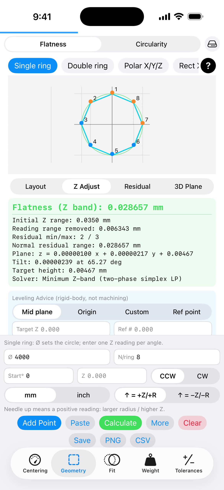

平面度と円度 — 表計算への往復なしで。
従来の流れはお決まりです。ダイヤルゲージの読みを書き留め、オフィスの PC まで戻り、Excel マクロを開き、Solver を実行し、結果をレポートに書き写す。CNC Workpiece Calculator 1.0.2 はこの一連の流れをポケットに収めました。1 秒以内に端末内で完了する最小域法の平面度ソルバーと 3 方式の円度フィッターを、既存の位置出し・ISO はめあい・公差・重量ツールと並べて搭載しています。
CNC の段取りと検査、受注加工の工場、品質エンジニア、教育訓練のために。すべて iPhone と iPad でオフライン動作 — アカウントなし、広告なし、トラッキングなし、ネットワーク不要。


Geometry 1.0.2 の新機能
検査でつらいのは平面度と円度です。測定自体はダイヤルゲージで 2 分 — 問題は計算です。誰も手で解かない最小 Z 帯域の問題は、たいてい 1 台の PC だけに住む Excel マクロ＋Solver に委ねられ、ファイルロックとマクロ警告に守られています。
| 工程 | Excel + Solver | CNC Workpiece Calculator |
|---|---|---|
| 測定値の入力 | オフィス PC のグリッドに打ち込む | マシン脇で使える専用テンキー（iPhone/iPad） |
| 平面度 | Solver を実行し、収束設定を願う | 2 段階シンプレックス LP。即座に、収束状態も表示 |
| 水準調整 | 平面の方程式からシムを手計算で導く | 測定点ごとの調整アドバイスと予測改善量 |
| 円度 | ワークブックの流儀 1 つ、答え 1 つ | 代数 fit・幾何 fit・最小域法 fit を並べて表示 |
| レポート | 表計算のスクリーンショット | ワンタップで PNG（チャート＋結果）または CSV |
3 方式の円 fit を正直に表示
代数的最小二乗、幾何学的最良 fit、Nelder–Mead による最小域法探索を同時に実行。Excel 互換の直径差と、より厳しい最小域法の半径範囲を別々に表示 — 旧来と新しい流儀の言い争いはもうありません。
6 種類のチャート表示
配置、偏差 ×10、残差、3D 平面、コンター、中心ズーム — 点を入力しながらリアルタイムで切り替え。選択点を強調し、表示はデータに合わせて自動スケール。
作業の流れに合う書き出し
ワンタップでチャートと結果パネル入りの 1200×800 PNG を写真または共有シートへ。点は CSV で書き出し。保存したセッションは後から「その他」パネルで再読み込み。
その他の機能
Geometry タブが、これまでのツール群に加わりました — すべてオフライン、すべて端末内。
プローブ測定による位置出し
測定した X/Y 点を入力（プローブ径の補正付き）すると、円・長方形・楕円・直スロット・二重円の中心/形状を計算します。
軸・穴のはめあい
呼び寸法と公差等級（例：H7/h6）を素早くチェックし、一般的な穴/軸の種類を選びながらはめあいの結果を確認できます。
一般公差
寸法公差と幾何公差（真直度/平面度、直角度、円形振れなど）の早見表で、現場ですぐ使える明快な結果を表示します。
重量の見積もり
代表的な形状（平板、パイプ、バー、リングなど）の重量を、材料プリセット・数量・メートル法/ヤードポンド法で見積もれます。
軍手でも打てる設計
最初のタップで置き換わる専用テンキー、符号切替、自動スクロール — 測定中にシステムキーボードと格闘しません。
オフライン & プライベート
アカウントなし、広告なし、トラッキング SDK なし。セッションは端末内に保存。ネットワークを一切使わないので、制限された工場ネットワークでも動きます。
クイックチュートリアル
5 つの作業の流れ — Geometry、位置出し、はめあい、重量、公差。



こんな方に
工場 & CNC 段取り
オフィスの PC まで歩かずに、位置出し・はめあい・幾何チェックを。
品質 & 検査
流儀を正直に明示した最小域法の平面度・円度 — 添付できる PNG レポート付き。
教育訓練
水準調整で実際に何が改善するのか、当てはめた平面がどう見えるのかを新人に見せられます。
よくある質問
Excel の Solver マクロを置き換えられますか？
現場での使用なら、はい。Geometry タブは同じ最小 Z 帯域問題を 2 段階シンプレックス LP ソルバーで端末内・1 秒以内に解きます。平面度の値、初期範囲、水準調整による減少量、当てはめた平面、点ごとのアドバイスを表示します。監査用の記録には点を CSV で書き出して独自ツールで処理できます。
円度はどの値を表示しますか — 旧来の直径差ですか、最小域法ですか？
両方、意図的に分けて表示します。代数 fit の中心での直径差（従来のワークブック流儀）と、より厳しい規格準拠の最小域法半径範囲です。
円度のダイヤルゲージ読みはどう入力しますか？
Indicator モードに切り替え、ゲージが 0 を示す直径を Ø 基準として入力し、各読みを符号付きで入力します。ゲージの符号設定は取付方向（針上 = 半径が大きい/小さい）に対応します。
水準調整アドバイスは何に基づきますか？
当てはめた最小帯域の平面です。各測定点について、提案される剛体補正と補正後の予測残差を表示します — 加工前の、シムや水準調整だけで得られる改善量です。
品質記録のために結果を書き出せますか？
はい。ワンタップでチャートと強調結果パネル入りの 1200×800 PNG を写真または共有シートに保存。測定点は CSV で書き出せます。
インターネット接続は必要ですか？
いいえ。計算・チャート・セッション保存・書き出しはすべてオフラインで動作します。
データを収集しますか？
開発者向けアナリティクスやトラッキング SDK は使用していません。詳細は プライバシー ページをご覧ください。
iPad で使えますか？
はい — iPhone と iPad の両方のワークフロー向けに UI を設計しています。
バグ報告や機能リクエストはどこへ？
wangning.engineer@outlook.com までメールしてください。
ダウンロード
現場で使う準備はできましたか？